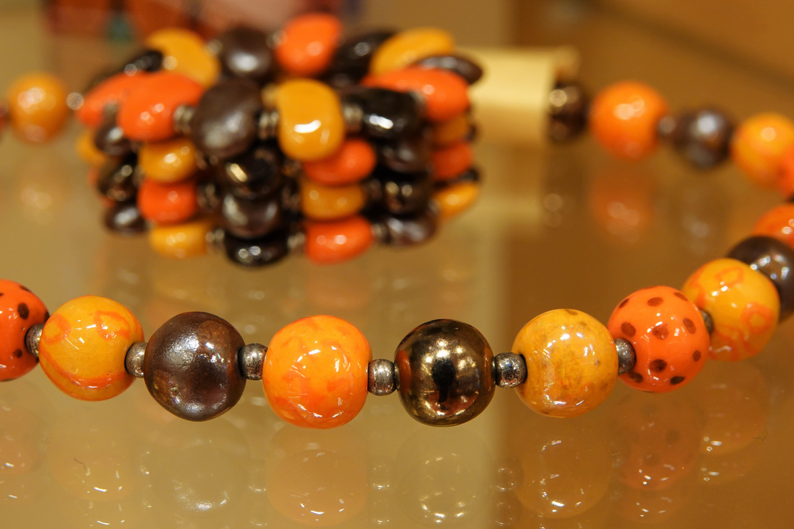
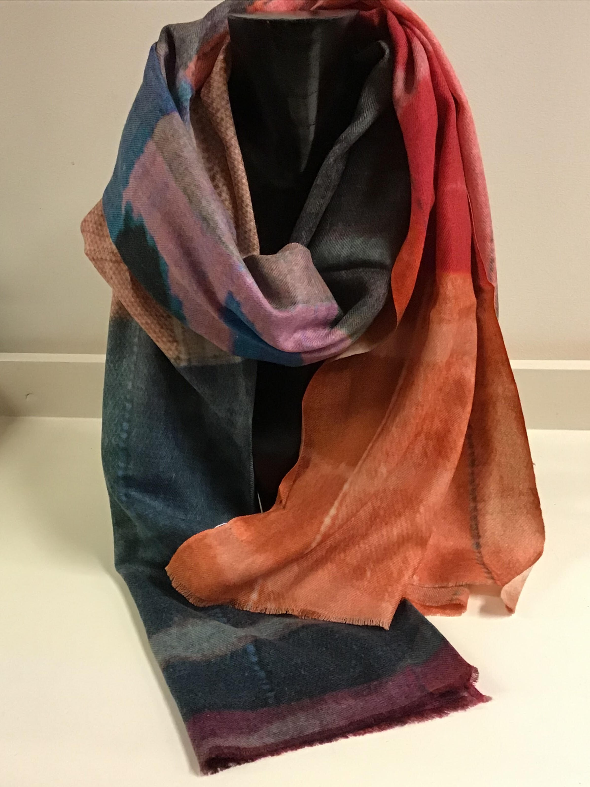

Sieraden en sjaals
Terug

Kazuri kettingen
kralen zijn handgemaakt en gekleurd door een van de 350 vrouwen die in dienst zijn bij Kazuri in Kenia. Lady Susan Wood startte in 1975 met Kazuri met het doel alleenstaande vrouwen in Kenia een kans te geven en een inkomen te realiseren met het maken van sieraden. De basis van deze keramiek is de klei die wordt gewonnen in het gebied rond Mount Kenya.
Verschillende soorten kettingen en armbanden
soorten kettingen en armbanden uit India


Zijden sjaals
geverfde zijden sjaals uit India